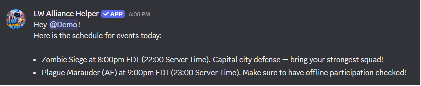
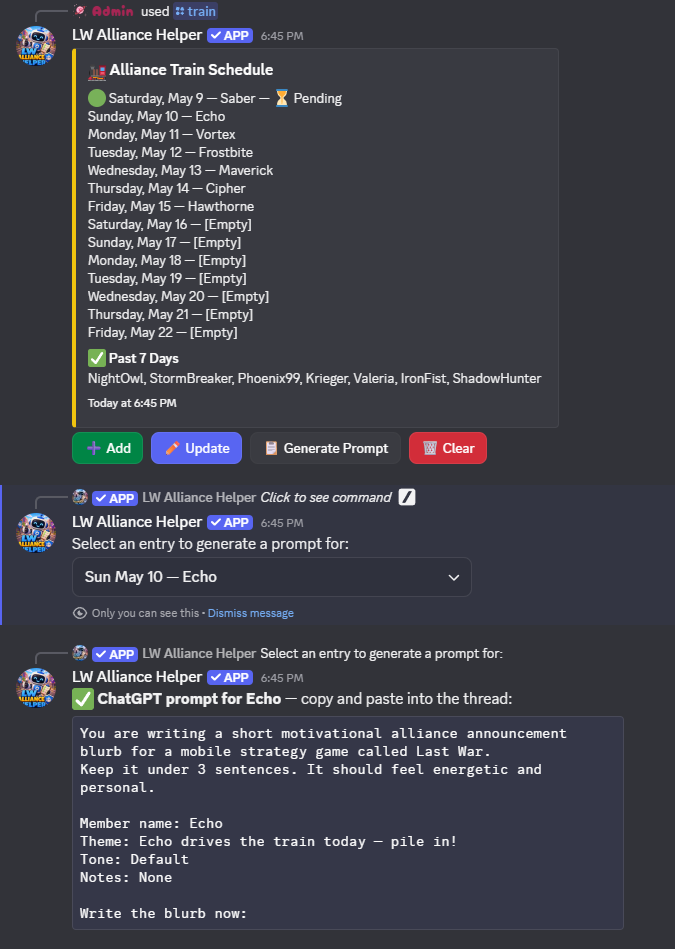
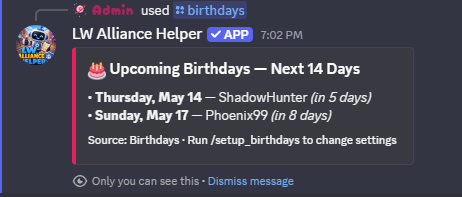
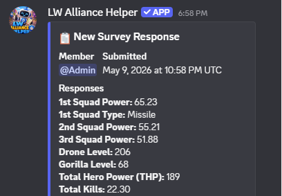
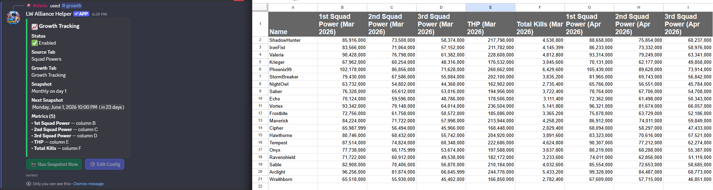

What It Does
📣 Event Announcements. Schedule Plague Marauder, Zombie Siege, and any other recurring events. The bot posts a draft to leadership for review at your chosen time each event day, then sends the final announcement to your public channel once approved. A 5-minute warning fires automatically before the event starts.
🚂 Train Schedule. Track who gets the alliance train each day and generate a personalised ChatGPT prompt to help write a blurb for that member. Birthdays can be automatically added to the schedule in advance.
🎂 Birthdays. Read birthday data from your Google Sheet and optionally add members to the train schedule on their birthday, post birthday announcements in Discord, or both.
⚔️ Desert Storm. Generate ready-to-copy team mail drafts for Team A and Team B each week. Configure participation tracking with the custom questions you choose, such as loggin who has to sit out. 💎 Premium unlocks the full storm workflow: a weekly sign-up poll for members, an officer view for setting up teams, a roster builder with auto-fill that splits sign-ups into starters and subs by closest power match, an image-rendered team roster for your in-game communication, and post-event attendance tracking with history.
🏜️ Canyon Storm. Built the same way as Desert Storm with mail generation, team tracking, participation logging with the questions you define, plus the same 💎 Premium sign-up + roster builder + attendance workflow.
📋 Survey. Let members submit their stats through a private Discord thread. Responses are saved directly to your Google Sheet and leadership gets a notification for each submission. 💎 Premium guilds can configure multiple named surveys.
📈 Growth Tracking. Track your alliance's growth over time by taking periodic snapshots of any stats you choose (squad powers, THP, total kills, or anything else in your sheet). You define the metrics, the source, and the schedule. Each snapshot also classifies every member's percent change into a bucket (Increased / Steady / Low / None / Decline) so you can see who is climbing and who is stalled at a glance.
🌟 Shiny Tasks. Daily auto-post listing every Last War server in your alliance's transfer-eligible window that has shiny tasks today. No more checking by hand and copy-pasting the list into your in-game mail.
📦 Data Portability. Migrating to a new Discord? Backing up before a leadership handover? /config export dumps your saved bot config to a JSON file, and /config import walks a guided channel and role remap wizard to apply it to another server. Your alliance's data already lives in your own Google Sheet; this carries the bot-side wizard answers alongside it.




Your Data Stays With You
Alliance Helper is built around a simple principle: your alliance's data lives in your own Google Sheet, on the Google account you control. Power scores, growth snapshots, train history, participation logs, member rosters: all of it is written to your sheet. The bot helps to organize; you own the data.

- You own the data. The bot reads and writes; it doesn't keep its own copy of your alliance's data.
- Use other tools alongside it. Your Sheet is just a Google Sheet. Edit it directly, point another tool at it, or export it. The bot doesn't care.
- Switch leadership without losing anything. Hand the Sheet off when leadership changes. Every record from every storm, train, and survey comes with it.
- Premium adds features, your alliance data lives in your own Google Sheet. Subscribing unlocks DMs, scheduled reminders, and roster sync. Nothing about where your data lives changes.
For details of what data is housed where, see Where Your Data Lives on the Privacy page.
Day-to-Day Quick Reference
Already set up? These are the commands leadership reaches for most. For the full list of every slash command and what it does, see the Commands reference.
| Situation | Command |
|---|---|
| Post or repost the survey button | /survey post |
| Manage the train schedule (add, update, generate prompt, clear) | /train overview |
| Add upcoming birthdays to the train schedule | /train birthdays |
| See upcoming birthdays | /birthdays |
| Open the event editor (and the rest of the events hub) | /events |
| Everything Desert Storm (sign-ups, roster, mail, participation, attendance, logs) | /desertstorm |
| Everything Canyon Storm (sign-ups, roster, mail, participation, attendance, logs) | /canyonstorm |
| Send or schedule a survey reminder | /survey remind |
| Run a growth snapshot manually | /growth overview → Run Snapshot Now |
| See the most recent growth bucket breakdown | /growth breakdown |
| Move or check your Premium subscription | /premium assign · /premium overview |
| 💎 Re-sync the member roster | /members sync |
| Export or import your bot config | /config export · /config import |
| Open the setup hub (every wizard, view config, reset) | /setup |
| See all commands | /help |
Troubleshooting
Click any issue below to expand the fix.
Commands aren't showing up in Discord
Slash commands can take up to an hour to appear after the bot first joins your server. If they still aren't showing after that, try removing and re-inviting the bot.
A specific user runs a command and nothing happens (no response, no error, nothing in the channel)
This is almost always Discord's Use Application Commands permission being denied for one of the user's roles. Discord blocks the interaction before it ever reaches the bot, so the bot has no record of it and the user sees nothing back.
Edit the channel (or its parent category) → Permissions, then check every role the user has, not just the leadership role. If any role has "Use Application Commands" set to red X (deny), Discord blocks the interaction entirely; deny always wins over allow when a user has multiple roles.
The fix is to either remove the deny on whatever role is causing it, or explicitly allow "Use Application Commands" on the leadership role at the channel/category level so it overrides @everyone.
"You don't have permission to use this command"
Most feature commands need to be run in the leadership channel by someone with the leadership role configured during /setup. The /setup hub also accepts anyone with server Administrator permission, so a server owner can configure a feature even without holding the leadership role.
"This bot hasn't been set up yet"
Run /setup first. The bot won't respond to feature commands until core setup is complete.
"Permission error" when the bot tries to access your sheet
The bot's service account doesn't have access to your sheet. Go to your sheet's sharing settings and make sure the service account email has been added as an Editor. You can find the email address by opening /setup, clicking Core Setup, and checking the Share Your Google Sheet step.
A button stopped working after a bot restart
Discord buttons lose their connection to the bot when it restarts. The bot also automatically strips its buttons after they've gone idle for too long and appends a notice ("⏰ The actions for this have timed out. Use /events (or /train, etc.) to re-initiate.") so you'll see when a draft has gone stale rather than guessing.
In either case, use the corresponding command to start a fresh flow:
| Button | Use instead |
|---|---|
| Event editor or approval | /events |
| Train reminder prompt button | /train overview |
| Anything on the Desert Storm event hub (mail, sign-ups, roster, attendance, log) | /desertstorm |
| Anything on the Canyon Storm event hub | /canyonstorm |
| Survey button | /survey post |
A setup wizard is stuck or you want to start over
Run /cancel to abort any active wizard, then re-open /setup and pick the feature again.
Something else isn't working
Use /help to see every command grouped by feature, or open /setup to confirm each feature you need has been configured. If the bot returns an error message with a Reference: ... code, include that ID when you report the issue. It lets us correlate to the exact failure on our side.
Still stuck or want to report a bug? Open an issue at our issue tracker. That's the best way to get in touch. We read every issue and reply there.